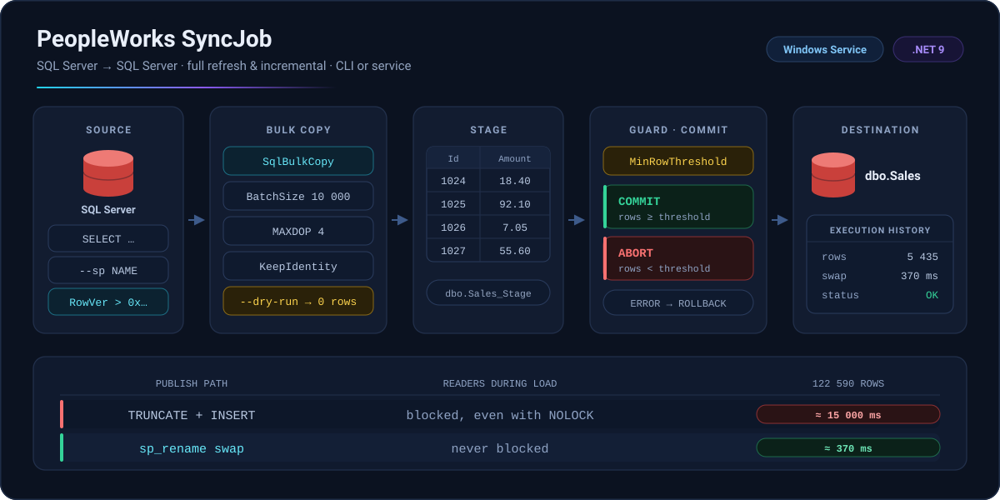

InstalaciónInstall
Tres caminos: binario autocontenido, herramienta de .NET, o compilar desde el código.
Three ways in: a self-contained binary, a .NET tool, or a build from source.
Binario o herramienta .NETBinary or .NET tool
El release trae syncjob-win-x64.zip: un solo ejecutable, sin runtime que instalar.
The release ships syncjob-win-x64.zip: a single executable, no runtime to install.
# binario del releaserelease binary
.\SyncJob.exe --version
# o como herramienta globalor as a global tool
dotnet tool install -g PeopleWorks.SyncJob
syncjob --versionCompilar desde el códigoBuild from source
git clone https://github.com/peopleworks/syncjob.git
cd syncjob
dotnet publish SyncJob.csproj `
-c Release -r win-x64 `
--self-contained true `
-p:PublishSingleFile=true `
-p:IncludeNativeLibrariesForSelfExtract=true `
-o ./publishIncludeNativeLibrariesForSelfExtract no es opcional. Sin él,
el archivo único deja fuera Microsoft.Data.SqlClient.SNI.dll y
e_sqlite3.dll, y el ejecutable lanza DllNotFoundException al
abrir la primera conexión.
IncludeNativeLibrariesForSelfExtract is not optional. Without it
the single file leaves out Microsoft.Data.SqlClient.SNI.dll and
e_sqlite3.dll, and the executable throws DllNotFoundException
the moment it opens a connection.
Inicio rápidoQuick start
Un archivo JSON describe el origen, el destino y las opciones. Se valida antes de escribir nada.
One JSON file describes source, destination and options. Validate it before writing a row.
appsettings.json
{
"SalesSync": {
"Source": {
"ConnectionString": "Server=SRC;Database=App;…",
"Query": "SELECT Id, Name, Amount FROM dbo.Sales"
},
"Destination": {
"ConnectionString": "Server=DW;Database=Rpt;…",
"StageTable": "dbo.Sales_Stage",
"FinalTable": "dbo.Sales"
},
"Options": {
"BatchSize": 10000,
"MaxDegreeOfParallelism": 4,
"KeepIdentity": true,
"MinRowThresholdToCommit": 1000
}
}
}Varias secciones en un mismo archivo son normales: -s elige cuál correr.
Several sections in one file is the normal case: -s picks which one runs.
Validar, ensayar, ejecutarValidate, rehearse, run
# 1 · conexiones, esquema y mapeos1 · connections, schema and mappings
SyncJob.exe validate -c appsettings.json -s SalesSync
# 2 · ensayo: no escribe una sola fila2 · rehearsal: not one row is written
SyncJob.exe run -c appsettings.json -s SalesSync --dry-run
# 3 · prueba con pocas filas3 · try it with a few rows
SyncJob.exe run -c appsettings.json -s SalesSync --top 100
# 4 · en serio4 · for real
SyncJob.exe run -c appsettings.json -s SalesSync¿Treinta columnas a mano? config-init genera la sección desde una lista de campos.
Thirty columns by hand? config-init writes the section from a list of field names.
SyncJob.exe config-init -f fields.txt -o appsettings.json `
-s SalesSync --stage dbo.Sales_Stage --final dbo.Sales `
--batch-size 10000 --maxdop 4 --min-commit 1000run — opcionesoptions
Todo lo que está en Options se puede sobrescribir en la línea de comandos para una sola corrida, sin tocar el archivo.
Anything under Options can be overridden on the command line for a single run, without touching the file.
| OpciónOption | Qué haceWhat it does |
|---|---|
-c, --config <PATH> | Archivo JSON. Default appsettings.jsonJSON file. Defaults to appsettings.json |
-s, --section <NAME> | Sección dentro del JSON. Default SyncJobSection inside the JSON. Defaults to SyncJob |
--all | Ejecuta todas las secciones, en orden de archivoRuns every section, in file order |
--continue-on-error | Con --all: sigue aunque una sección falleWith --all: keep going when a section fails |
--dry-run | Valida sin escribir ninguna filaValidates without writing a single row |
--direct | Escribe directo en Final, sin StageWrites straight to Final, skipping Stage |
--append | No trunca Final antes de cargarDoes not truncate Final before loading |
--full-refresh | Ignora el tracking incremental y sincroniza todoIgnores incremental tracking and syncs everything |
--init-tracking | Crea e inicializa la tabla de trackingCreates and initializes the tracking table |
--top <N> | Lee solo N filas del origen (pruebas)Reads only N rows from the source (testing) |
--min-commit <N> | Sobrescribe MinRowThresholdToCommitOverrides MinRowThresholdToCommit |
--force-commit | Comitea aunque las filas no lleguen al umbralCommits even when rows fall below the threshold |
--skip-commit | Carga Stage y no publica en FinalLoads Stage and does not publish to Final |
--batch-size <N> | Sobrescribe BatchSizeOverrides BatchSize |
--maxdop <N> | Sobrescribe MaxDegreeOfParallelismOverrides MaxDegreeOfParallelism |
--sp <NAME> | Usa un stored procedure como origenUses a stored procedure as the source |
--sp-param <N=V> | Parámetro del stored procedure (repetible)Stored procedure parameter (repeatable) |
--log-level <L> | Trace · Debug · Info · Warn · Error · Fatal |
--log-file <PATH> | Archivo de log de esta corridaLog file for this run |
--log-dir <PATH> | Directorio de logs, con archivo diario automáticoLog directory, auto-named daily file |
--json-log | Logs en JSONL, para agregadoresJSONL logs, for aggregators |
--quiet | Sin salida en consola, solo archivoNo console output, file only |
--trust-server-cert | No valida la CA del servidor SQL (temporal / dev)Skips SQL Server CA validation (temporary / dev) |
Correr todo el archivo de una vezRunning the whole file at once
Un archivo suele tener varias sincronizaciones. Encadenarlas a mano en un script es exactamente donde una se olvida y nadie se entera.
A config file usually holds several syncs. Chaining them by hand in a script is exactly where one gets forgotten and nobody notices.
# todas las secciones, parando en el primer falloevery section, stopping at the first failure
SyncJob.exe run -c appsettings.json --all
# terminar y reportar al final cuáles fallaronfinish, then report which ones failed
SyncJob.exe run -c appsettings.json --all --continue-on-errorUna sección cuenta como sincronizable cuando tiene Source y
Destination, así que bloques como ConnectionStrings o
Logging se saltan solos.
A section counts as syncable when it has both Source and
Destination, so unrelated blocks like ConnectionStrings or
Logging are skipped automatically.
Stage → Final
Las filas se escriben en una tabla de staging antes de que exista una transacción. Publicar es solo renombrar.
Rows are written to a stage table before any transaction opens. Publishing is just a rename.

Cómo funciona el intercambioHow the swap works
En un full refresh, SyncJob no trunca la tabla final para copiar filas dentro. Intercambia las dos tablas por nombre:
For a full refresh, SyncJob does not truncate the final table and copy rows into it. It swaps the two tables by name:
Final → Final_swap_a1b2c3d4
Stage → Final ← ya cargada, ahora publicada← already loaded, now published
temporal → Stage ← datos viejos, se descartan← old data, discardedTRUNCATE toma un lock de modificación de esquema que se mantiene hasta
el commit, y todo lector se bloquea contra él, incluso con NOLOCK. En una
tabla de 122 590 filas eso midió ~15 s de dashboards congelados. El swap midió ~370 ms.
TRUNCATE takes a schema-modification lock held until commit, and
every reader blocks against it — even one using NOLOCK. On a 122,590-row
table that measured ~15 seconds of blocked dashboards. The rename swap measured
~370 ms.
Cuándo cae al camino lentoWhen it falls back
SyncJob vuelve a TRUNCATE + INSERT — mismo resultado, solo
más lento — cuando el swap no aplica:
SyncJob falls back to TRUNCATE + INSERT — identical results,
just slower — when the swap does not apply:
- view
Finales una vista, no una tablaFinalis a view, not a table- schema
FinalyStageviven en esquemas distintosFinalandStagelive in different schemas- --append
- hay que conservar las filas existentesexisting rows must be preserved
El log deja constancia de cuál camino corrió:
dest.swap.rename o dest.swap.truncate.
The log records which path ran:
dest.swap.rename or dest.swap.truncate.
sp_rename cambia qué tabla responde a qué nombre; índices, constraints y
permisos siguen a la tabla física. Si agrega un índice solo a Final, tras el
próximo swap ese índice vive en Stage. Cree los índices en ambas.
Indexes travel with the physical table, not the name.
sp_rename changes which table answers to which name; indexes, constraints and
permissions follow the physical table. Add an index to Final only, and after
the next swap it lives on Stage. Create indexes on both.
Red de seguridadSafety net
Copiar una tabla es fácil. Copiarla cada noche, sin nadie mirando, sin dejar nunca el destino peor que antes, no lo es.
Copying a table is easy. Copying it every night, unattended, without ever leaving the destination in a worse state than before, is not.
MinRowThresholdToCommit
El guardia. Si el origen devuelve menos filas de las esperadas, no se publica nada.
The guard. If the source returns fewer rows than expected, nothing is published.
# umbral en la corrida, sin tocar el archivothreshold for this run only
SyncJob.exe run -c appsettings.json -s SalesSync --min-commit 1000
# sé lo que hago: publica igualI know what I am doing: publish anyway
SyncJob.exe run -c appsettings.json -s SalesSync --force-commit0 no protege de nada. Póngalo en un número que
signifique algo: es lo que impide que un origen roto vacíe el destino.
A threshold of 0 protects nothing. Set it to a number that means
something: it is the guard that stops a broken source from wiping the destination.
Ensayar antes de estrenarRehearse before opening night
# conexiones, esquema y mapeos; nada se escribeconnections, schema and mappings; nothing is written
SyncJob.exe validate -c appsettings.json -s SalesSync
# valida contra la tabla Final (modo directo)validate against the Final table (direct mode)
SyncJob.exe validate -c appsettings.json -s SalesSync --direct
# carga Stage y se detiene antes de publicarload Stage and stop before publishing
SyncJob.exe run -c appsettings.json -s SalesSync --skip-commit
# 100 filas para ver la forma de los datos100 rows to see the shape of the data
SyncJob.exe run -c appsettings.json -s SalesSync --top 100Mapeos de columnasColumn mappings
Son obligatorios cuando los nombres difieren o cuando quiere mover un subconjunto.
Cuando coinciden uno a uno, deje la lista vacía y SyncJob la deriva del origen leyendo la
metadata con CommandBehavior.SchemaOnly: SQL Server devuelve las columnas
sin ejecutar la consulta.
Required when source and destination names differ, or when you want a subset of the
columns. When the names match one to one, leave the list out and SyncJob derives it from the
source, reading the metadata with CommandBehavior.SchemaOnly: SQL Server returns
the column list without executing the query.
"ColumnMappings": [
{ "Source": "Id", "Dest": "CustomerId" },
{ "Source": "FullName", "Dest": "Name" }
]
"ColumnMappings": [] # o quitar la propiedad: se deriva solaor omit it entirely: derived automaticallyEscribir treinta nombres a mano es exactamente donde se esconde el error tipográfico que aparece cuando los datos salen corridos una columna.
Hand-writing thirty column names is exactly where a typo hides until the data comes out shifted by one.
Sincronización incrementalIncremental sync
Solo las filas que cambiaron desde la última corrida. SyncJob crea y mantiene dbo.SyncJobTracking en el destino.
Only the rows that changed since the last run. SyncJob creates and maintains dbo.SyncJobTracking in the destination.
ConfiguraciónConfiguration
"Incremental": {
"Enabled": true,
"Mode": "RowVersion",
"TrackingColumn": "RowVer",
"MergeStrategy": "Upsert",
"PrimaryKeyColumns": ["Id"],
"DeleteDetection": "SoftDelete",
"SoftDeleteColumn": "IsDeleted",
"SoftDeleteValue": "1"
}# primera vez: crear la tabla de trackingfirst time: create the tracking table
SyncJob.exe run -c appsettings.json -s SalesSync --init-tracking
# volver a traer todo, ignorando el watermarkpull everything again, ignoring the watermark
SyncJob.exe run -c appsettings.json -s SalesSync --full-refreshModos de trackingTracking modes
| ModoMode | Cómo filtraHow it filters |
|---|---|
Timestamp | WHERE UpdatedAt > @LastSync |
RowVersion | WHERE RowVer > 0x{last} |
ChangeTracking | Change Tracking nativoNative Change Tracking |
ChangeDataCapture | CDC, con valores anterioresCDC, including old values |
RowVersion es el modo de producción: es monótono y no sufre
desfases de reloj entre servidores.
RowVersion is the production mode: it is monotonic and immune to
clock skew between servers.
Estrategia de mergeMerge strategy
Insert | Solo filas nuevasNew rows only |
Upsert | Inserta nuevas + actualiza existentes por PKInsert new + update existing, by primary key |
Full | Inserta + actualiza + eliminaInsert + update + delete |
Detección de bajasDelete detection
SoftDelete | Columna bandera igual a un valorFlag column equals a value |
AutoDetect | Eventos de Change Tracking / CDCChange Tracking / CDC events |
Comparison | Comparación de PK entre origen y destinoPK comparison between source and destination |
SecretosSecrets
Las cadenas de conexión viven en un archivo, en un servidor. secrets cifra las contraseñas con Windows DPAPI: la llave la gestiona el sistema operativo y nunca está en el archivo ni en el binario.
Connection strings live in a file on a server. secrets encrypts the passwords with Windows DPAPI: the key is managed by the operating system and never lives in the file or the binary.
Ver y cifrarInspect and encrypt
# qué está expuestowhat is exposed
SyncJob.exe secrets status -c appsettings.json
# cifrar cada contraseña del archivoencrypt every password in the file
SyncJob.exe secrets protect -c appsettings.json
# para un servicio: alcance de máquinafor a service: machine scope
SyncJob.exe secrets protect -c appsettings.json --scope machineSolo se cifra la contraseña. Servidor, base y usuario quedan legibles: durante un incidente hay que poder ver a dónde apunta un job sin descifrar nada, y un diff del archivo tiene que seguir sirviendo.
Only the password is encrypted. Server, database and user stay readable, because during an incident you need to see where a job points without decrypting anything — and a diff of the file has to stay useful.
Marcadores de alcanceScope markers
El valor cifrado lleva su propio alcance, así que descifrar nunca tiene que adivinar.
Each encrypted value carries its own scope, so decryption never has to guess.
| MarcaMarker | Quién puede descifrarWho can decrypt |
|---|---|
enc:u: | Solo la cuenta que cifró, en esa máquinaOnly the account that encrypted it, on that machine |
enc:m: | Cualquier cuenta de esa máquinaAny account on that machine |
| (none) | Texto plano — cualquieraPlain text — anyone |
user por defecto y el servicio de Windows corre bajo otra cuenta,
el servicio no puede leer el archivo. Use --scope machine o cifre estando
logueado como la cuenta del servicio.
Choosing a scope is not cosmetic. If you encrypt from an interactive
session with the default user scope and the Windows Service runs under a
different account, the service cannot read the file. Use --scope machine,
or encrypt while signed in as the service account.
.plain.bak
protect escribe una copia .plain.bak la primera vez que corre.
Ese respaldo tiene las contraseñas en claro: muévalo a un lugar seguro y bórrelo del servidor.
Volver a correr protect nunca lo sobrescribe, así que el original no se pierde.
protect writes a .plain.bak copy the first time it runs.
That backup holds the passwords in clear text — move it somewhere safe and delete it from the
server. Re-running protect never overwrites that backup, so the original is not lost.
SyncJob.exe secrets protect -c appsettings.json --no-backup # sin copia en clarono clear-text copyQué protege DPAPI: copiar el archivo a otra máquina es inútil, la llave no viaja con él. Qué no protege: quien ya ejecuta código como el mismo usuario, en la misma máquina, puede leer el secreto. Ese es el límite del mecanismo, y conviene saberlo en vez de suponerlo.
What DPAPI protects: copying the file to another machine is useless — the key does not travel with it. What it does not protect: anyone already executing code as the same user, on the same machine, can read the secret. That is the boundary of the mechanism, and it is worth knowing rather than assuming.
Flujo SQLiteSQLite workflow
La alternativa al JSON: conexiones, configuraciones y mapeos guardados en una base SQLite local, con las contraseñas cifradas con DPAPI.
The alternative to JSON: connections, configs and mappings stored in a local SQLite database, with passwords encrypted using DPAPI.
Montar una sincronizaciónSet up a sync
# 1 · conexiones1 · connections
SyncJob.exe connection add source `
--server SQL01 --database SourceDB `
--username etl --password "secret"
SyncJob.exe connection add dest `
--server SQL02 --database DestDB `
--username etl --password "secret"
SyncJob.exe connection test source
# 2 · configuración2 · config
SyncJob.exe config create sales `
--display-name "Sales Sync" `
--source-conn source --dest-conn dest `
--source-query "SELECT Id, Name, Amount FROM dbo.Sales" `
--dest-stage dbo.Sales_Stage --dest-final dbo.Sales
# 3 · mapeos3 · mappings
SyncJob.exe mapping add sales `
--source Id --dest Id --primary-key
SyncJob.exe mapping add sales `
--source Name --dest Name
# 4 · ejecutar4 · run it
SyncJob.exe run-db sales --dry-run
SyncJob.exe run-db salesTodos los subcomandos aceptan --interactive para pedir los valores paso a paso.
Every subcommand accepts --interactive to be walked through the values.
Historial de ejecucionesExecution history
Cada corrida se guarda sola: inicio y fin, duración, filas leídas, insertadas, actualizadas, eliminadas y fallidas, detalle del error, máquina y ruta del log.
Every run is stored automatically: start and end time, duration, rows read, inserted, updated, deleted and failed, error detail, host machine and log path.
SyncJob.exe history list
SyncJob.exe history list sales --status Failed --limit 20
SyncJob.exe history show <execution-id>
SyncJob.exe history stats --days 30
SyncJob.exe history clear --older-than 90La base localThe local database
SyncJob.exe db info
SyncJob.exe db backup --output C:\Backup\syncjob.db
SyncJob.exe db restore --file C:\Backup\syncjob.db
SyncJob.exe db cleanup --older-than 90
SyncJob.exe db vacuumAutomatizaciónAutomation
El mismo binario corre como tarea programada, como servicio de Windows, o reportando a un hub central.
The same binary runs as a scheduled task, as a Windows Service, or reporting into a central hub.
Task Scheduler
SyncJob.exe run `
-c C:\SyncJob\appsettings.json -s SalesSync `
--min-commit 1000 `
--log-file C:\Logs\sync.sales.log `
--log-level Info --json-log --quietJSONL es compatible con Loki, Splunk y Azure Monitor. Los logs registran progreso, conteos y errores, nunca contraseñas.
JSONL is compatible with Loki, Splunk and Azure Monitor. Logs record progress, counts and errors, never passwords.
# archivo diario automático en un directorioauto-dated daily file in a directory
SyncJob.exe run -c config.json -s SalesSync `
--log-level Debug --log-dir C:\LogsServicio de WindowsWindows Service
Sin argumentos, el binario arranca en modo agente. Con run o
run-db, en modo CLI.
With no arguments the binary starts in agent mode. With run or
run-db, in CLI mode.
New-Service -Name "PeopleWorks SyncJob" `
-BinaryPathName "C:\SyncJob\SyncJob.exe" `
-StartupType Automatic `
-DisplayName "PeopleWorks SyncJob Service"
Start-Service "PeopleWorks SyncJob"El servicio se registra en el Visor de eventos con el origen
"PeopleWorks SyncJob" y consulta tareas cada 30 segundos.
The service registers in the Windows Event Log under source name
"PeopleWorks SyncJob" and polls for tasks every 30 seconds.
Hub centralCentral hub
Agrega el historial de varias máquinas en una sola base SQL Server. Tras
central enable, cada run-db exitoso empuja su registro a
ExecutionHistory_Central. Si el envío falla, la sincronización igual tuvo éxito:
el push es fire-and-forget.
Aggregates execution history from several machines into one SQL Server database. After
central enable, every successful run-db pushes its record to
ExecutionHistory_Central. If the push fails the sync still succeeded — central sync is
fire-and-forget.
SyncJob.exe central setup # asistente interactivointeractive wizard
SyncJob.exe central test # verificar la conexiónverify the connection
SyncJob.exe central enable # push automático tras cada corridaauto-push after every run
SyncJob.exe central status # configuración actualcurrent configuration
SyncJob.exe central sync # empujar el historial pendientepush pending history
SyncJob.exe central disableEn modo servicio, el servidor central además puede despachar tareas a los agentes
conectados a través de la tabla SyncTasks.
In service mode the central server can also dispatch sync tasks to connected agents
through the SyncTasks table.
Antes de la primera corrida en producciónBefore the first production run
validate | Correrlo en toda configuración nuevaRun it on every new config |
--min-commit | Un valor con sentido, nunca 0A meaningful value, never 0 |
secrets protect | Ninguna contraseña en claro en el servidorNo password sitting in clear text on the server |
.plain.bak | Sacarlo del servidor tras cifrarMove it off the server after encrypting |
--scope machine | Si un servicio va a leer el archivoIf a Windows Service will read the file |
--top 100 | Probar tablas grandes antes de la carga completaTest large tables before the first full load |
--init-tracking | Inicializar el tracking antes del incrementalInitialize tracking before the first incremental run |
| indexes | Crear en Stage los índices que tenga FinalCreate every Final index on Stage as well |
| grants | Permisos de escritura y bulk insert en el destinoBulk insert and write permissions on the destination |
ChuletaCheat sheet
Todos los comandos. Los de la ruta JSON no necesitan base de datos; los de la ruta SQLite guardan el estado en syncjob.db.
Every command. The JSON path needs no database; the SQLite path keeps its state in syncjob.db.
| ComandoCommand | RutaPath | Qué haceWhat it does |
|---|---|---|
SyncJob.exe --version | — | VersiónVersion |
SyncJob.exe --help | — | AyudaHelp |
examples | — | Ejemplos de usoUsage examples |
run -c … -s … | JSON | Ejecuta una sincronizaciónExecutes a sync |
run -c … --all | JSON | Ejecuta todas las secciones del archivoExecutes every section in the file |
validate -c … -s … | JSON | Valida conexiones, esquema y mapeosValidates connections, schema and mappings |
config-init -f … -o … | JSON | Genera la sección desde una lista de camposWrites a section from a list of field names |
secrets status -c … | JSON | Muestra qué contraseñas están expuestasShows which passwords are exposed |
secrets protect -c … | JSON | Cifra las contraseñas con DPAPIEncrypts the passwords with DPAPI |
connection add|list|test|delete | SQLite | Conexiones a SQL ServerSQL Server connections |
config create|list|show|delete | SQLite | Configuraciones de sincronizaciónSync configurations |
mapping add|list|remove|clear | SQLite | Mapeos de columnas por configuraciónColumn mappings per config |
run-db <CONFIG_ID> | SQLite | Ejecuta desde la configuración guardadaExecutes from the stored config |
history list|show|stats|clear | SQLite | Historial de ejecucionesExecution history |
db info|backup|restore|cleanup|vacuum | SQLite | Administra la base localManages the local database |
central setup|test|status|sync | SQLite | Hub central de sincronizaciónCentral sync hub |
central enable|disable|reset | SQLite | Activa o reinicia el push automáticoTurns the auto-push on, off, or resets it |
SyncJob.exe (sin argumentos / no args) | — | Arranca como servicio de WindowsStarts as a Windows Service |
Herramienta hermana — SQLDiffCompanion tool — SQLDiff
SyncJob mueve datos. SQLDiff mueve estructura. Y se pasan trabajo: primero la forma, después las filas.
SyncJob moves data. SQLDiff moves structure. And they hand work to each other: structure first, then data.
# el drift sale con código 2 cuando las bases divergendrift exits with code 2 when the databases diverge
SQLDiff.exe drift --source "…" --target "…" || exit 1
SyncJob.exe run -c appsettings.json --allUna sincronización hacia un destino cuya forma cambió falla ruidosamente o, peor, tiene éxito hacia las columnas equivocadas. Verificar la forma cuesta segundos.
A sync into a destination whose shape has drifted either fails loudly or, worse, succeeds into the wrong columns. Checking the shape costs seconds.